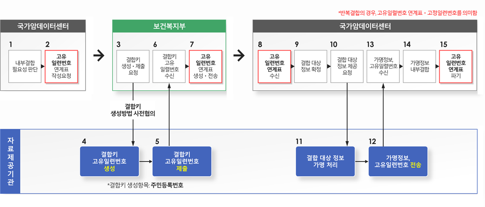
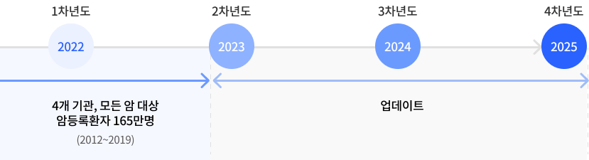

공공기관 업무 협약
- 암 질환 연구기반 조성 및 국민 보건의료 향상에 기여하고자 공공기관이 보유하는 데이터 결합 및 공동활용 등 암 공공데이터 구축을 통해 K-CURE 임상데이터 네트워크 조성
- 01암관리법에 따라 공공 데이터 제공 및 암 공공 라이브러리 구축
- 02공공기관 및 의료기관에 산재된 암 데이터 연계 결합 활성화
- 03사망원인정보 결합 서비스 제공 및 데이터 공유 활용 촉진을 위한 안심활용센터 공동 이용
- 04공공 기관 협의체 운영 등 유기적 협력관계 구축
공공 데이터 결합 절차
(「가명정보의 제공절차 및 국가암데이터센터 지정·운영 등에 관한 고시」 제4조 관련)

데이터 개방 및 활용
- 내·외부전문가로 구성된 국가암데이터센터 데이터 심의위원회를 거쳐 , 의료데이터 안심활용센터 (폐쇄분석형)에서 제공
추진일정암 공공 라이브러리를 2022년 구축 후 1년 주기로 업데이트
